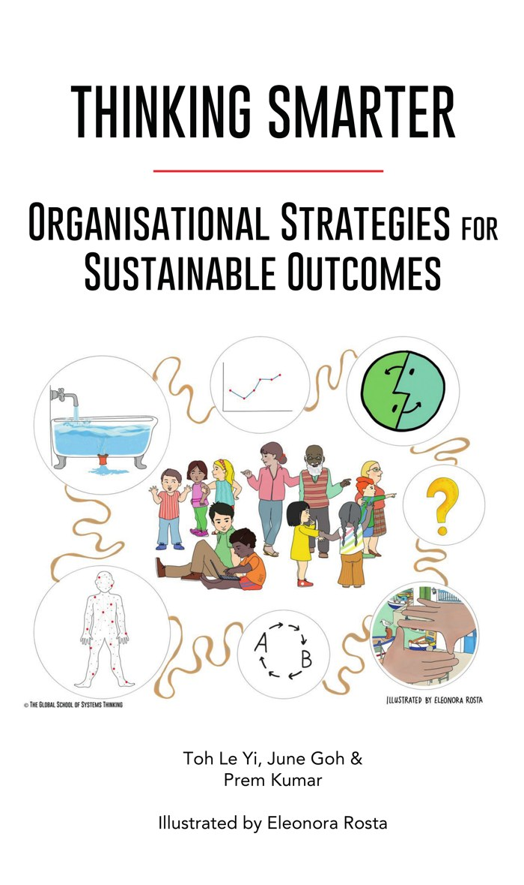

Notice patterns over time
Look at trends over months and years, not only this month’s figures. A single result can mislead; a pattern shows what keeps repeating and gives time to act before a problem grows.
See the patterns behind problems that keep coming back, and where one small change can make the biggest difference.
The Global School of Systems Thinking works with leaders, teams and schools through consulting, certified programmes and coaching.

Based on feedback from our clients, we are pleased to offer the following to help build individual and organisational capabilities, for growth and for social good, in an increasingly complex and unpredictable world.
Five minutes on how your organisation thinks, and on your own habits. Works whether or not you work in a team.
Take the Health Check → For your team · freeRun it live in a workshop or a team meeting. Everyone answers anonymously, and the team sees the combined results.
Run a Team Check → For schools and families · freeA short video, three student shorts and discussion questions for students, parents and teachers.
Explore resources for schools → For your organisationConsulting, the certified Thinking Smarter Programme and coaching, tailored to your organisation’s challenges.
See our services →Thinking Smarter tells the story our workshops are built around. Write to us to order the book or to bring the workshop to your organisation.
Look at trends over months and years, not only this month’s figures. A single result can mislead; a pattern shows what keeps repeating and gives time to act before a problem grows.
Trace how a decision in one team affects others, and what it leads to later. A fix in one place can create a problem somewhere else. Seeing the connections shows where one small change can make the biggest difference.
Test the assumptions behind plans, and make it safe to ask why. Speaking up can carry career risks, so people weigh the trade-offs; leaders shape whether it feels worth it. Research links teams where people feel safe to ask with more learning and innovation. When questions go unasked, problems can stay hidden and new ideas may be lost.
Watch for early warning signs, and consider how changes outside the organisation could affect it. Try new approaches on a small scale first, so the organisation can adapt before conditions force it to.
See how your organisation does on all four →
Rate 20 short statements about your organisation and your own habits, note which learning tools your organisation uses and how well they work, and get your own results dashboard with practical suggestions. Free, anonymous and no sign-up needed.
Managing in the middle? The gaps between senior leaders and newer colleagues are often less about generations and more about expectations and how work is organised. A Team Health Check shows where views in a team differ.
Our methodology helps teams recognise patterns in complexity, identify where to intervene and plan for sustainable outcomes. We work with organisations in governance, education and business, in person or virtually.
Every programme draws on our proprietary learning tools and is tailored to the client. Teams apply the tools to live issues from their own work, so the learning shows up in better decisions and real results.
We work with leadership teams to map the systems behind a persistent challenge, identify points of leverage and agree a course of action. Engagements are scoped to your organisation's context and can include facilitated strategy sessions and team workshops.
The Thinking Smarter Programme is a certification programme for organisations, delivered in-house and customised in length and content to your needs. Participants learn to think smarter through hands-on practice on issues from their own organisation.
Certification is currently offered to organisations rather than to individual applicants; open sessions at external venues may be arranged in future where there are enough participants. Write to us for the programme outline or to register your interest.
Systems coaching tailored to the individual, using GSST Frameworks to examine the systems and structures that shape behaviour. Sessions are scheduled at your convenience.
One-hour sessions that introduce the Thinking Smarter approach to a wider audience and prompt reflection and discussion drawn from participants' own experience.
Working with a school? See Tiny Thinks Smarter for schools, with a student video, the book and classroom discussion questions.
The Global School of Systems Thinking helps people learn to think smarter, developing the potential of individuals and organisations, for their own growth and for social good.
Learning and performance that serve people, planet and prosperity, and the balance between them.
Making thinking smarter simple, visible and practical, so that individuals and organisations can learn, perform and find that balance.
C + C + C = SO
Curiosity + Connection + Care = Sustainable Outcomes
Sustainable Outcomes: decisions and results that serve people, planet and prosperity today, without leaving a heavier burden for those who come after. They come from understanding the trade-offs, weighing what matters to the stakeholders involved, and anticipating what a decision could set off elsewhere or later.
Prem is an author, researcher and organisational consultant whose career spans the private and public sectors, including community development. He helps individuals, teams and institutions build the capabilities to handle change, uncertainty and difficult choices.
He is also Adjunct Faculty at the Singapore University of Social Sciences (SUSS). His research looks at how individuals, organisations and nations learn and develop.

Toh Le Yi, June Goh and Prem Kumar · 2022
Written as a story, the book accompanies our workshops and gives participants a shared reference for applying the tools at work.

Thinking Smarter was created by a small team with very different backgrounds, which is the book's own message: our differences are a strength.
To discuss training or consulting for your organisation, write to us by email and we will propose a programme that fits.
We also partner with organisations on training and corporate social responsibility initiatives that apply Thinking Smarter for sustainable outcomes and social good.
globalsystemsthinking@gmail.com